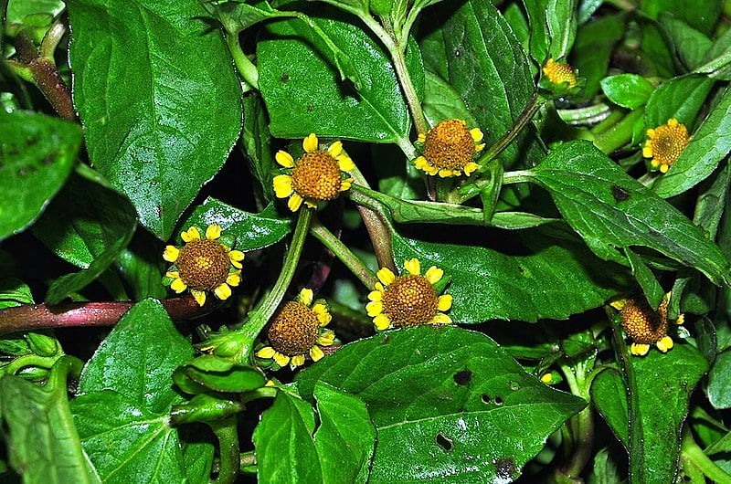

A Amazônia, conhecida como o "pulmão do mundo", abriga a maior floresta tropical do planeta, com uma biodiversidade inigualável. Este bioma exuberante contém uma vasta gama de espécies vegetais, muitas delas endêmicas, desempenhando um papel fundamental para o equilíbrio ecológico global. Explore abaixo algumas das maravilhas da flora amazônica.
A Amazônia é o lar de algumas das maiores árvores do mundo, como a majestosa Samaúma (Ceiba pentandra), que pode atingir até 70 metros de altura. Árvores como o Mogno (Swietenia macrophylla) e o Cedro (Cedrela odorata) também são símbolos da força e grandiosidade da floresta.
A Amazônia é uma farmácia natural. Diversas plantas da floresta são usadas há séculos por comunidades indígenas para tratar doenças e aliviar sintomas. Entre as mais conhecidas estão a Unha-de-Gato (Uncaria tomentosa), o Guaraná (Paullinia cupana) e o Jaborandi (Pilocarpus jaborandi), cujos compostos são amplamente estudados pela ciência moderna.
A Amazônia é um verdadeiro jardim de flores exóticas, como as vibrantes orquídeas e a icônica Vitória-Régia (Victoria amazonica), que pode atingir até 3 metros de diâmetro. Essas flores não são apenas belas, mas também desempenham um papel importante no ecossistema, atraindo polinizadores como abelhas e pássaros.
A vegetação densa da Amazônia atua como uma gigante esponja de carbono, ajudando a regular o clima global. Árvores como a seringueira (Hevea brasiliensis) e o pau-rosa (Aniba rosaeodora) absorvem grandes quantidades de CO2, desempenhando um papel essencial no combate às mudanças climáticas.